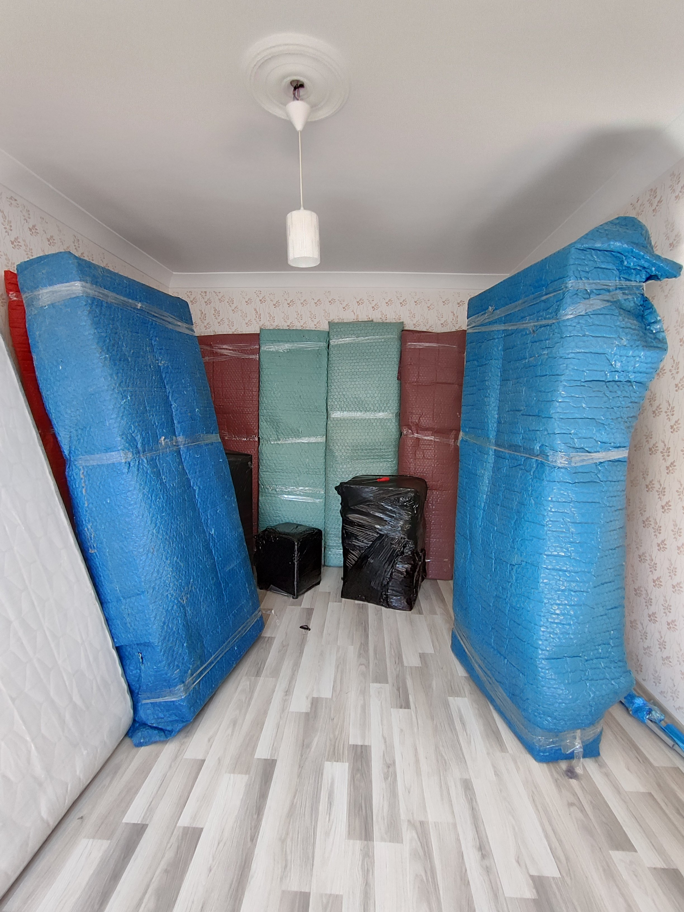

Gaziantep - Mersin Taşımacılığı
Gaziantep'ten Mersin'e taşınıyorsanız eşyalarınız aktarmasız, tek araçla ve sigortalı olarak gider. Yenişehir, Mezitli ve Erdemli hattına düzenli sefer. Yaklaşık 290 km'lik güzergâhta teslim süresi ortalama Aynı gün'dür.
| Güzergâh | Gaziantep → Mersin |
|---|---|
| Mesafe | Yaklaşık 290 km |
| Teslim süresi | Aynı gün |
| Taşıma tipi | Komple araç veya parsiyel (paylaşımlı) |
| Asansör | Çift taraflı (Gaziantep + Mersin) |
| Sigorta | Dâhil (nakliyat sigortası) |
| Depolama | 15 gün ücretsiz |
| Belge | K1 Yetki Belgeli · e-Fatura |
Komple mi, parsiyel mi?
Komple araç: Sadece sizin eşyanız yüklenir, araç doğrudan Mersin'e gider. En hızlı ve en güvenli seçenektir; 2+1 ve üzeri ev taşımalarında önerilir.
Parsiyel taşıma: Eşyanız aynı güzergâha giden başka yüklerle birlikte taşınır. Öğrenci evi, 1+1 daire ya da az sayıda eşya için maliyeti %40'a kadar düşürür.
Süreç nasıl işliyor?
- Ücretsiz keşif ile eşya hacmi ölçülür, sabit fiyat verilir
- Taşınma günü paketleme ve demontaj yapılır
- Asansörle indirilen eşyalar kapalı kasa araca yüklenir
- Araç Mersin'e hareket eder; yol boyunca bilgilendirilirsiniz
- Mersin'deki adreste asansörle boşaltma ve montaj yapılır
- Teslim tutanağı imzalanır, e-Fatura düzenlenir
Gaziantep'in hangi ilçelerinden alıyoruz?
Şahinbey, Şehitkamil, Nizip, İslahiye, Nurdağı, Oğuzeli, Araban, Yavuzeli ve Karkamış dâhil tüm ilçelerden Mersin'e taşıma yapıyoruz. İlçelere gidiş için ek nakliye ücreti talep etmiyoruz.
Mersin'ın Sık Taşınma Yapılan Bölgeleri
Yenişehir başta olmak üzere Mersin'de taşımalarımızı aşağıdaki ilçe ve bölgelere düzenli olarak gerçekleştiriyoruz. Bölgeyi tanıyan ekibimiz site kuralları, asansör uygunluğu ve park düzenini keşif aşamasında planlar.
- Yenişehir
- Mezitli
- Toroslar
- Akdeniz
- Tarsus
- Erdemli
- Silifke
- Anamur
- Mut
Mersin hattımızda taşımalar Mezitli ve Yenişehir'deki sahil siteleri ile Tarsus'un yeni konut bölgelerine yoğunlaşır. Yazlık taşımalarında sezonluk eşya (bahçe mobilyası, büyük beyaz eşya) için hacim planlaması keşifte yapılır.
Gaziantep → Mersin Güzergâh Notları
- Güzergâh Tarsus-Adana-Gaziantep (TAG) Otoyolu üzerinden yaklaşık 290 km; 3-3,5 saat sürüş, aynı gün teslim.
- Tarsus teslimleri otoyol çıkışından doğrudan, merkez teslimleri liman yolu üzerinden planlanır.
- Erdemli ve Silifke sahil teslimleri D400 üzerinden aynı gün tamamlanır.
- Yazlık sitelerde taşıma saati kısıtları yönetimlerden önceden teyit edilir.